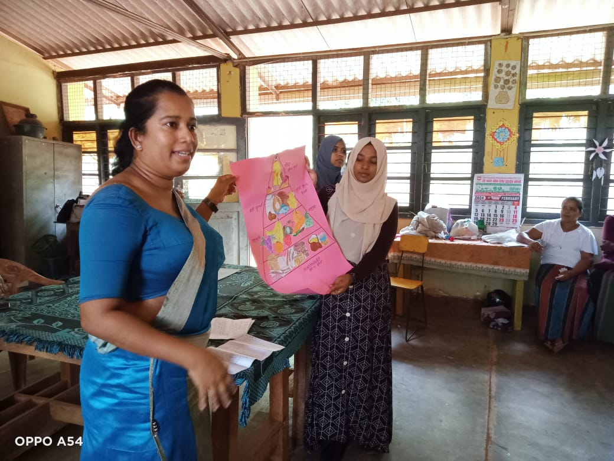
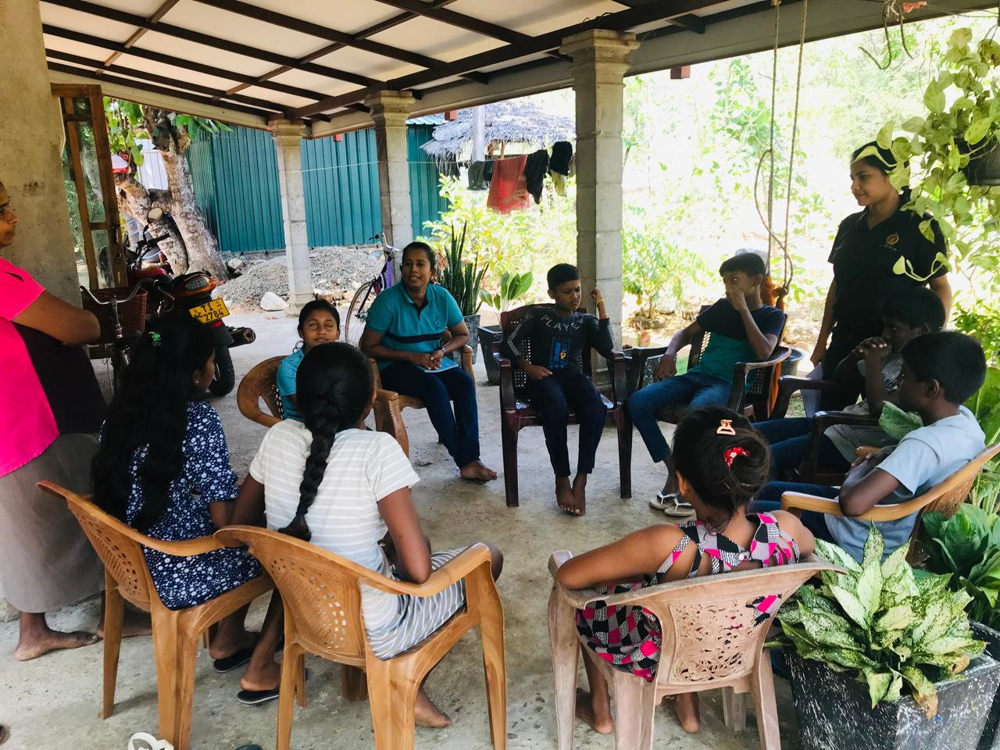
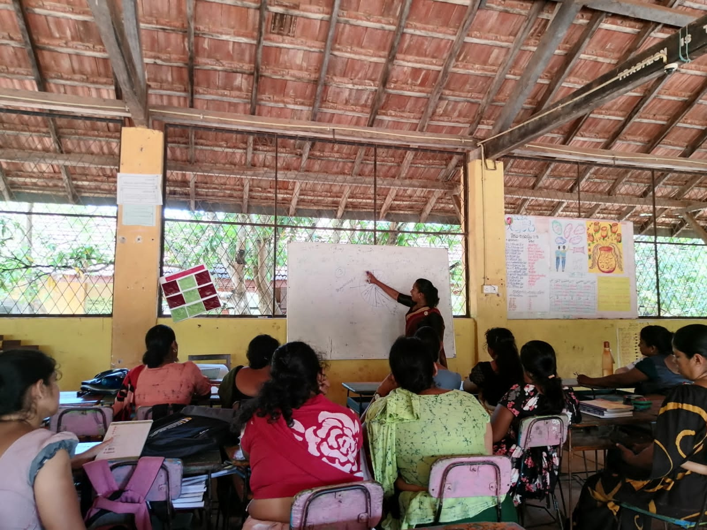
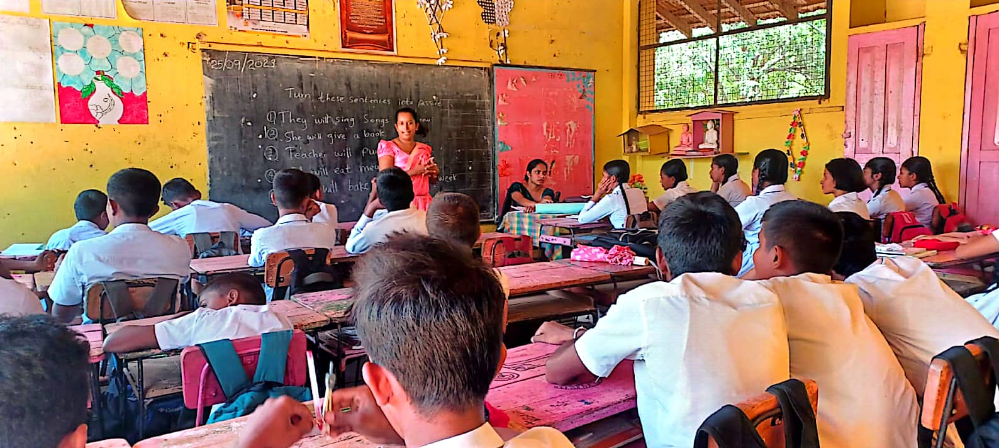
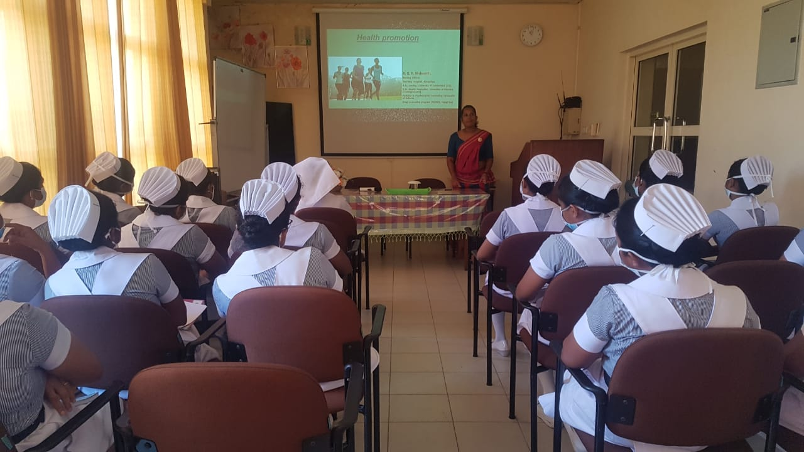
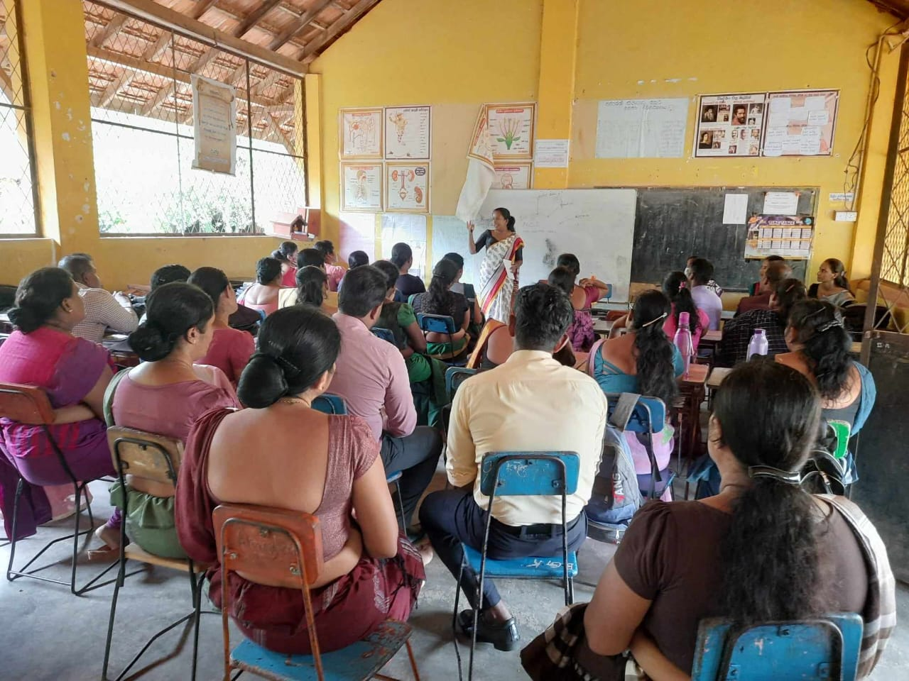

Nursing Officer | Health Promoter | Counselor
With over 17 years of experience in the healthcare sector, I combine clinical expertise with a passion for health promotion and community well-being.
I am a dedicated and compassionate Nursing Officer with over 17 years of experience in the government healthcare sector in Sri Lanka. My clinical journey has taken me through key units including the medical ward, neurology and maxillofacial surgery unit, emergency care, and pediatric wards.
I have built strong skills in patient-centered care, emergency response, critical thinking, and effective teamwork. I am passionate about promoting health, ensuring patient safety, and continuously learning to enhance my nursing practice.
Currently, I am pursuing my studies in Health Promotion, aiming to contribute more effectively to preventive healthcare and community well-being.
Highlights from my professional journey in healthcare, health promotion activities, and community engagement.

Conducting a health awareness session

Working with local community groups

Attending healthcare conferences

Educating students on health matters

Collaborating with medical professionals

Providing one-on-one health guidance
September 2016 - Present
National Hospital, Galle
Worked in the Oral and Maxillofacial Unit, delivering comprehensive pre- and post-operative care. Managed complex wounds, prevented infections, and collaborated with multidisciplinary teams to optimize patient recovery. Previously served 5 years in the neurology unit caring for patients with conditions like stroke, epilepsy, and neuromuscular disorders.
2023 - 2024
Rajarata University of Sri Lanka
Conducted field-based health promotion activities targeting schools, rural communities, and workplaces. Performed health assessments, awareness programs, and behavioral change communication sessions. Collaborated with public health officers and local stakeholders to address key health issues.
November 2017 - 2019
Teaching Hospital Karapitiya
Served as a link between clinical teams and the quality assurance unit. Conducted audits, monitored care standards, and supported staff in implementing updated practices to improve patient safety and quality of care.
December 2014 - September 2016
District Hospital Katharagama
Provided comprehensive nursing care in a district hospital setting, managing various patient needs and supporting local healthcare delivery.
January 2004 - April 2014
Sri Jayawardenepura General Hospital
Worked 7 years in the medical ward, caring for patients with acute and chronic conditions. Administered medications, monitored vital signs, assisted with diagnostic procedures, and maintained accurate documentation while collaborating with multidisciplinary teams.
Rajarata University of Sri Lanka
2022 - 2025 (Expected)
University of Sunderland
2021 - 2022
University of Ruhuna
2016 - 2017
National School of Nursing Sri Jayawardenapura
January 2004 - January 2007
Sangamiththa Girls College Galle
January 1998 - August 2000